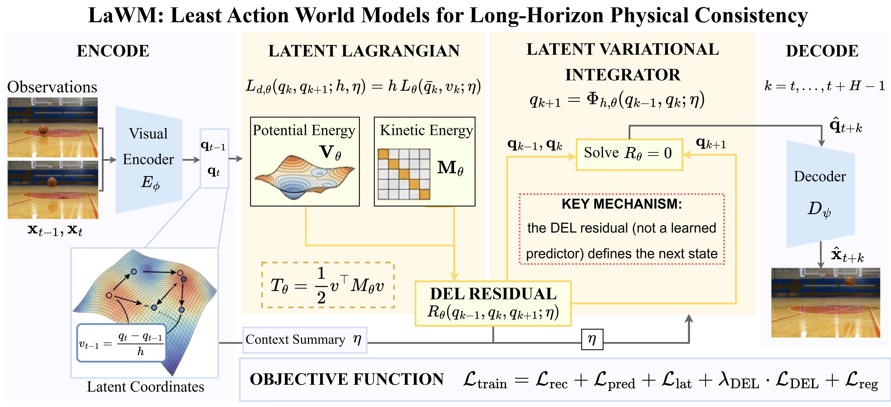
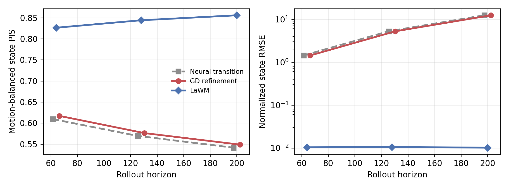
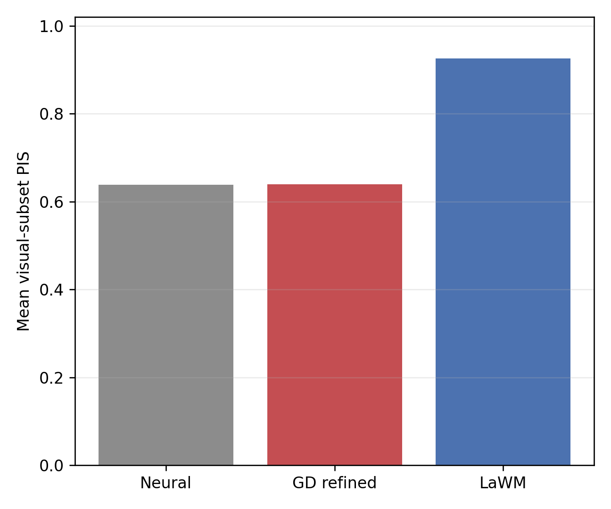
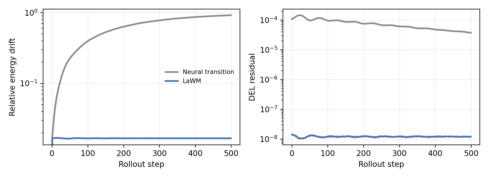
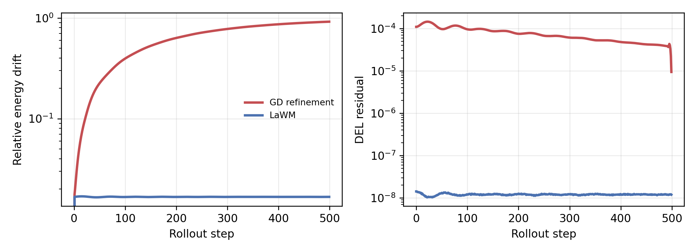

University of Michigan
{qxiaocs, maanigj}@umich.edu
Abstract & Overview
Learning predictive world models from visual observations is a core problem in embodied AI, but existing latent world models often rely on unconstrained neural transitions, making long-horizon rollouts prone to compounding error, energy drift, and inconsistent futures. We propose Least Action World Models (LaWM), a latent world-modeling framework that operationalizes the Principle of Least Action in learned visual latent space: future rollouts are governed by a learned Latent Lagrangian action functional rather than only an unconstrained transition predictor. At its core is a Latent variational integrator: LaWM encodes observations into learned generalized coordinates, learns a discrete Latent Lagrangian, constructs a discrete action functional, and advances prediction by solving the corresponding discrete integration condition. This makes physical structure the latent transition rule itself, giving LaWM a structure-preserving bias for long-horizon visual prediction across physics-clean and embodied robot interaction benchmarks.

Figure 1: Observations are encoded into generalized coordinates, where a learned discrete Lagrangian defines a DEL residual. The next coordinate is obtained by solving the DEL condition and is then decoded into future observations.
Least-Action World Model
Future rollouts are governed by a learned Lagrangian action functional.
Latent Variational Integrator
The DEL condition defines the transition rule rather than only regularizing a completed trajectory.
Long-Horizon Consistency
LaWM improves physical invariance, background consistency, smoothness, appearance, and geometry metrics.
Method
LaWM keeps the familiar visual world-model interface, but replaces the unconstrained latent transition with a structure-preserving rollout rule induced by a learned Latent Lagrangian.
Five stages from visual observation to physically consistent rollout.
Encode Observations
Visual frames are mapped into learned generalized coordinates, giving the model compact coordinates where dynamics can be organized.
Each observation is encoded into a generalized coordinate where the later variational dynamics operate.
Physics-Clean Visualizations
The physics-clean benchmark covers canonical dynamical patterns used to test whether a model preserves motion-specific physical regularities during long-horizon prediction. These qualitative strips correspond to the twelve motion families described in the paper.
Motion Demos
Short video rollouts show the canonical dynamics used by the physics-clean benchmark.
View Paper Qualitative Strips


Main Results
LaWM is evaluated in two complementary regimes: physics-clean video prediction and RoboScape-style embodied robot interaction prediction. The first tests physical invariance across canonical dynamics; the second tests appearance, geometry, and action-conditioned scene evolution under clutter, occlusion, contact, and depth variation.
Acceleration PIS
LaWM improves acceleration consistency over NewtonGen on the physics-clean benchmark.
Parabolic PIS-ay
Projectile motion remains closer to the expected gravity-driven physical quantity.
Embodied PSNR
On RoboScape-style prediction, LaWM improves PSNR from 21.85 to 22.42.
Table 1 Highlights: Physics-Clean Video Prediction
The full Table 1 reports all motion types and metrics. Representative rows below show where the DEL-defined transition improves physical invariance over NewtonGen, the strongest physics-oriented baseline.
| Motion Type | Metric ↑ | NewtonGen ↑ | LaWM ↑ | Interpretation |
|---|---|---|---|---|
| Acceleration | PIS-ax higher better | 0.6568 | 0.8964 | better acceleration consistency |
| Parabolic Motion | PIS-ay higher better | 0.8189 | 0.9443 | better gravity-driven rollout |
| Slope Sliding | PIS-ax higher better | 0.6312 | 0.8524 | better inclined-plane dynamics |
| Rotation | PIS-omega higher better | 0.8838 | 0.9436 | better angular consistency |
| Para. w/ Rotation | PIS-vx higher better | 0.9446 | 0.9943 | better coupled motion |
Table 2: RoboScape-Style Embodied Prediction
LaWM improves over RoboScape on all reported appearance, geometry, and action-conditioned metrics. LPIPS and AbsRel are lower better; all other metrics are higher better.
| Method | LPIPS ↓ | PSNR ↑ | AbsRel ↓ | delta1 ↑ | delta2 ↑ | APSNR ↑ |
|---|---|---|---|---|---|---|
| IRASim | 0.6674 | 11.5698 | 0.6252 | 0.5013 | 0.7020 | 0.0269 |
| iVideoGPT | 0.4963 | 16.1236 | 0.7586 | 0.3480 | 0.5795 | 0.1144 |
| Genie | 0.1683 | 19.7571 | 0.4425 | 0.5435 | 0.7736 | 1.9871 |
| CogVideoX | 0.2180 | 17.5222 | 0.5243 | 0.6046 | 0.7599 | - |
| RoboScape | 0.1259 | 21.8533 | 0.3600 | 0.6214 | 0.8307 | 3.3435 |
| LaWM | 0.1138 | 22.4176 | 0.0490 | 0.9494 | 0.9658 | 9.3043 |
Ablation and Diagnostics
The ablations isolate the role of LaWM's transition-level variational structure. The central comparison is against gradient-based trajectory refinement, which uses the learned action only to optimize a completed trajectory. LaWM instead uses the discrete Euler-Lagrange condition as the recursive transition rule.
Motion-Balanced mPIS
LaWM improves over GD refinement, which obtains 0.756.
PIS Wins
LaWM wins on most physical invariance quantities in the refinement ablation.
Energy Drift
In the controlled diagnostic, LaWM sharply reduces long-horizon energy drift.




Controlled Latent Mechanism Diagnostic
| Method | Rollout Rule | PIS@64 ↑ | Energy Drift ↓ | DEL Residual ↓ |
|---|---|---|---|---|
| Neural transition | unconstrained predictor | 0.906 | 0.272 | 1.06e-04 |
| GD refinement | post-hoc trajectory optimization | 0.907 | 0.266 | 1.68e-05 |
| LaWM | DEL variational step | 0.997 | 0.028 | 1.31e-08 |
Citation
If you find this work useful, please cite:
@article{xiao2026lawm,
title={LaWM: Least Action World Models for Long-Horizon Physical Consistency from Visual Observations},
author={Xiao, Qixin and Ghaffari, Maani},
journal={arXiv preprint},
year={2026}
}
License
This project page follows the LaWM paper and associated releases. Please refer to the repository for license details when the code is released.